全部为 Validation / development results。曲线是各 masks 的平均值；不重跑训练。
每个 Teacher 一张图；上排 LR，下排 XGBoost。三条方法线加全部 labels 的参考线。
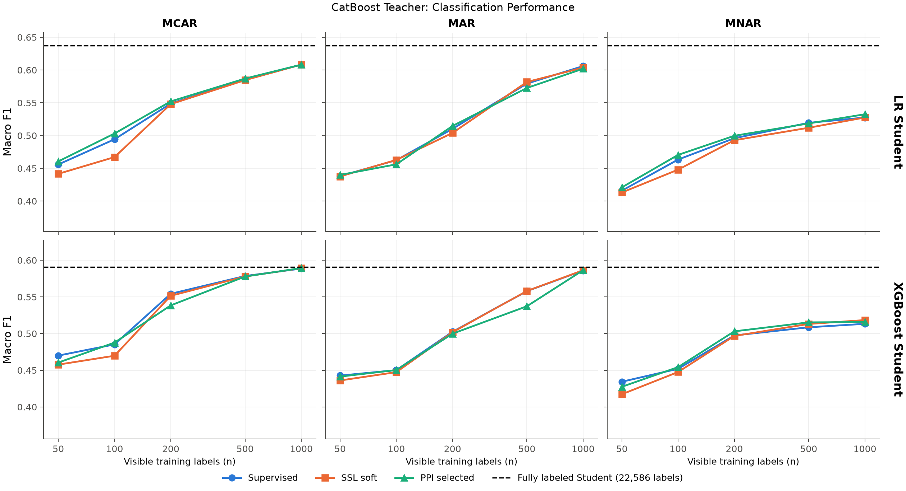
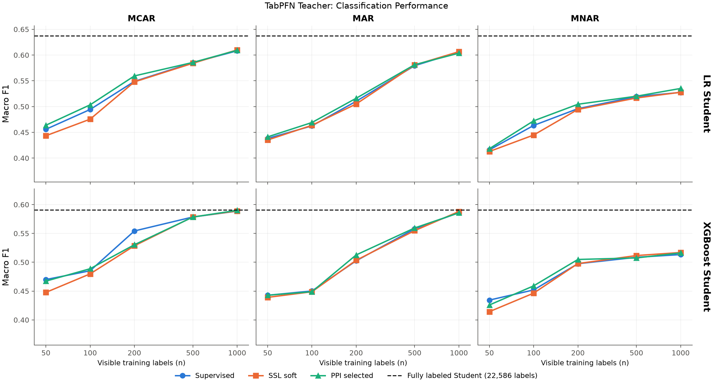
每个 Teacher 一张图；只比较 SSL、PPI 相对 Supervised 的改善。大于零更好。
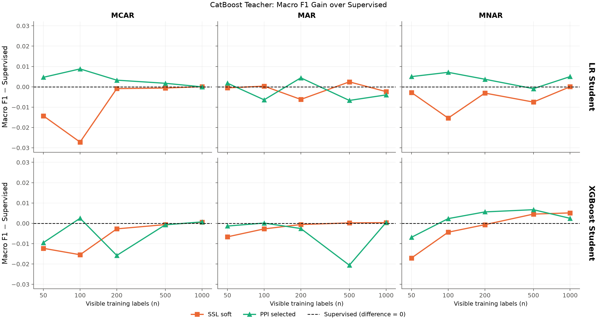
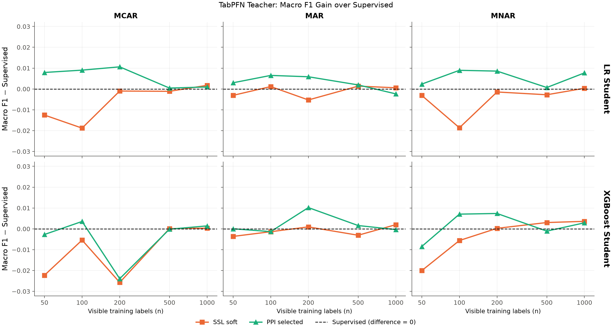
PPI 改善了哪些 classes？蓝色为改善，红色为下降；颜色范围一致。
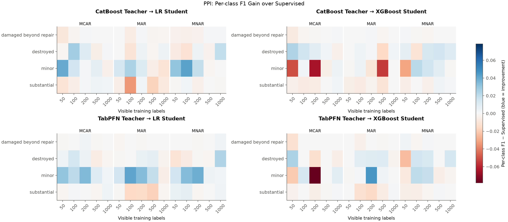
单独检查 Teacher 的预测质量。
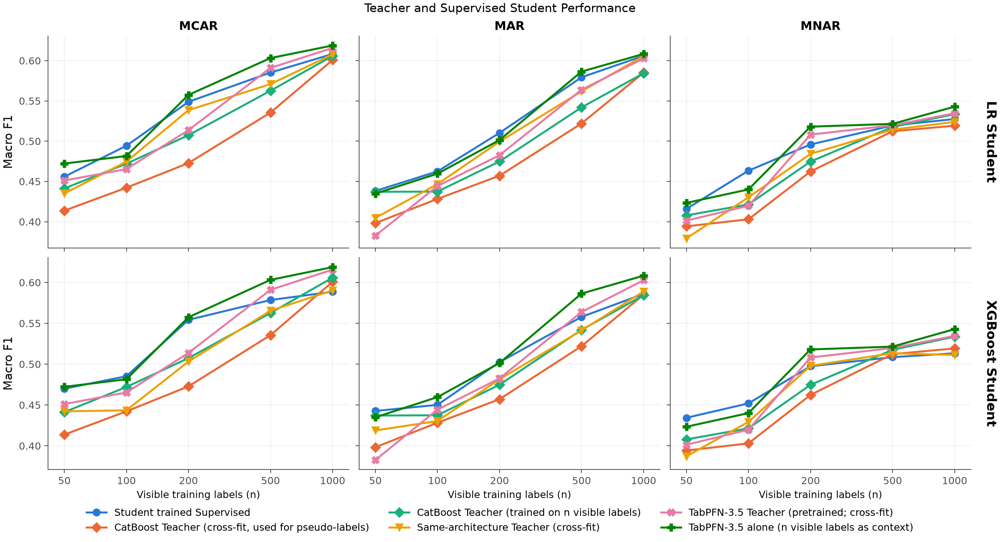
Teacher/λ、XGBoost 和 improved pipeline 的补充比较。
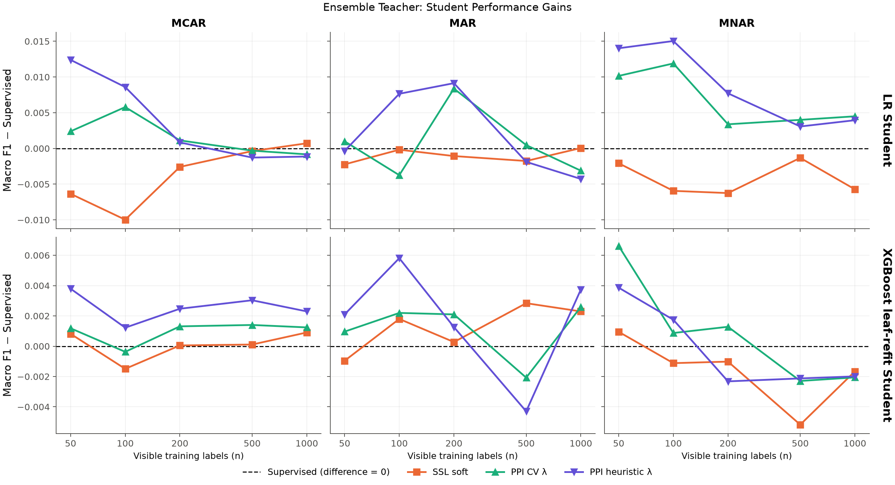
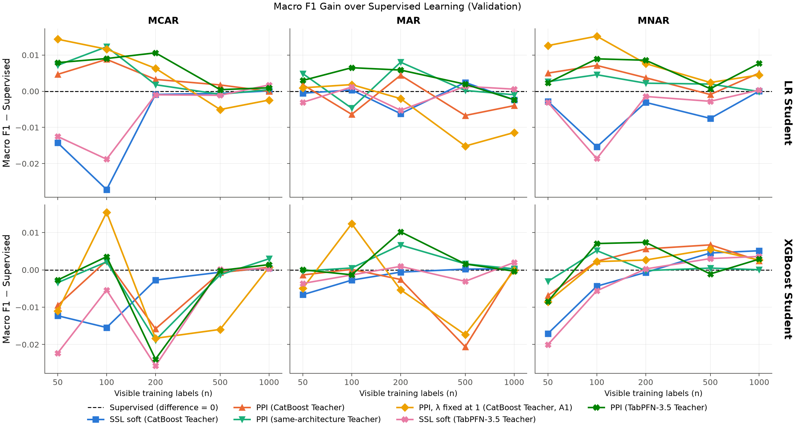
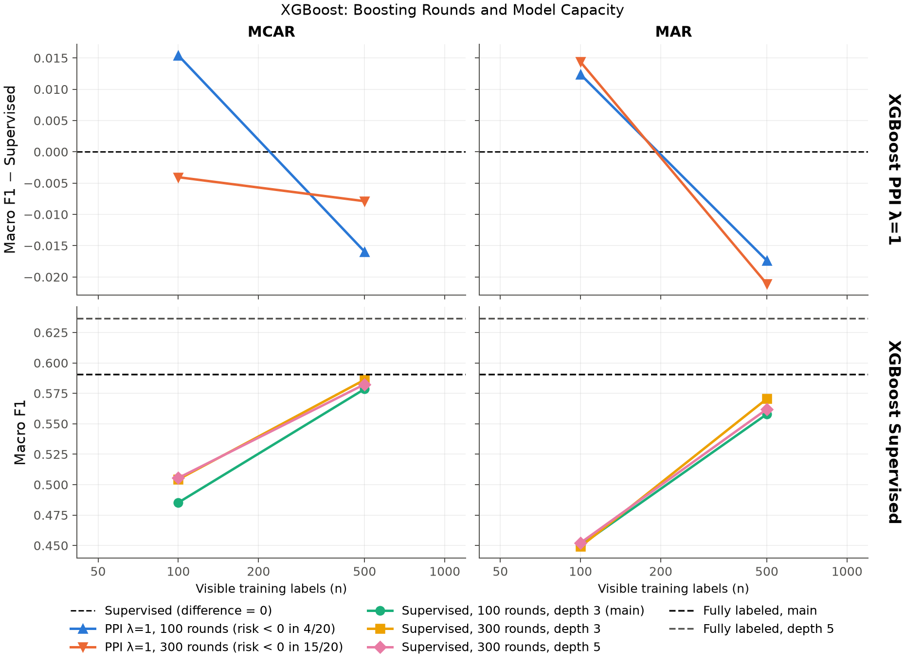
合成数据上的检查，不是 aircraft Test results。
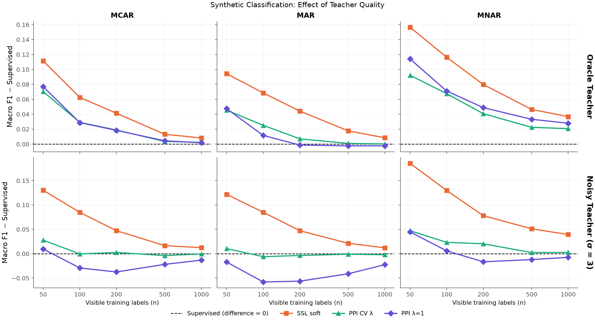
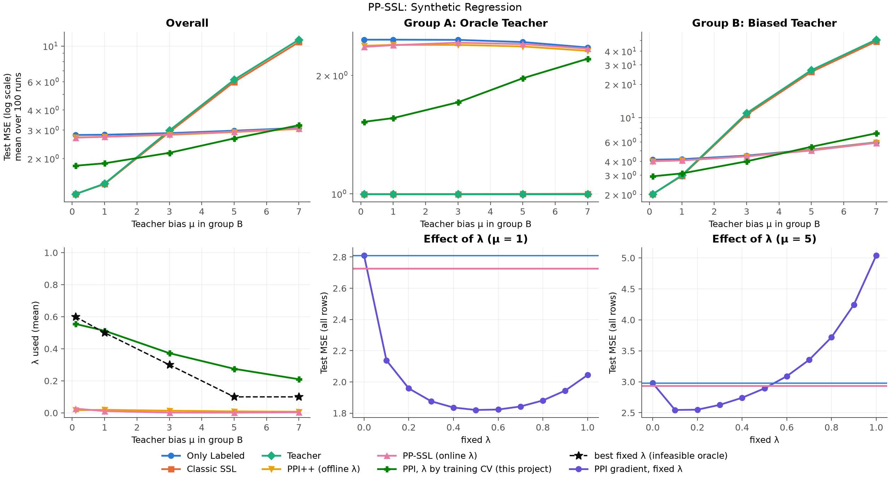
LR Student：SSL、PPI 相对 Supervised 的配对变化，向右为更好（Log Loss 取负）；误差线为按 seed 重抽样的 95% 区间。PPI 改善 class-balanced 指标（Macro F1、Balanced Accuracy），SSL 改善 Accuracy 与 Log Loss。XGBoost 的同样结果见 tables/metric_differences.csv。
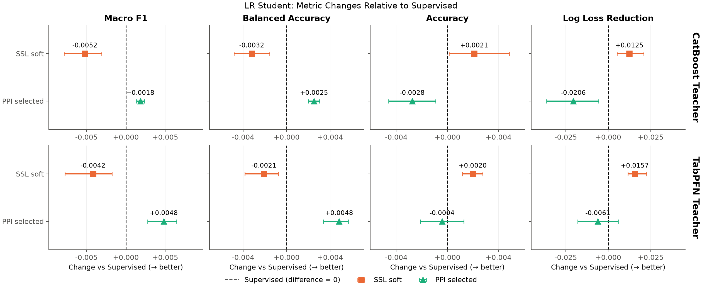